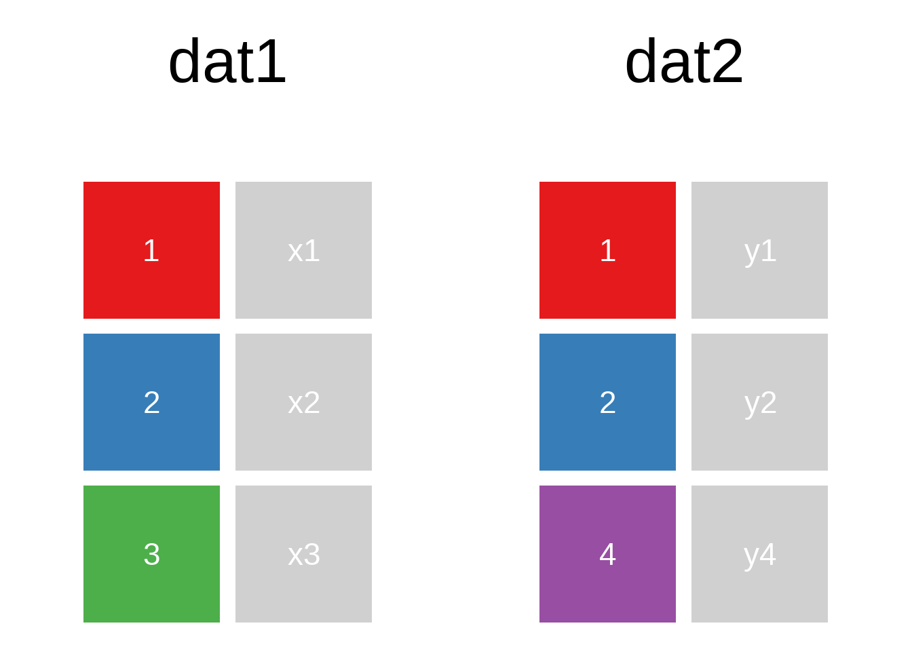
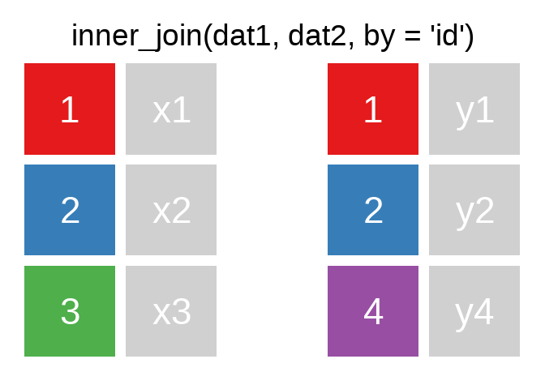
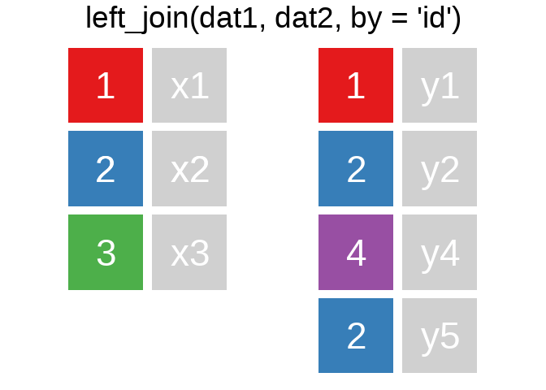
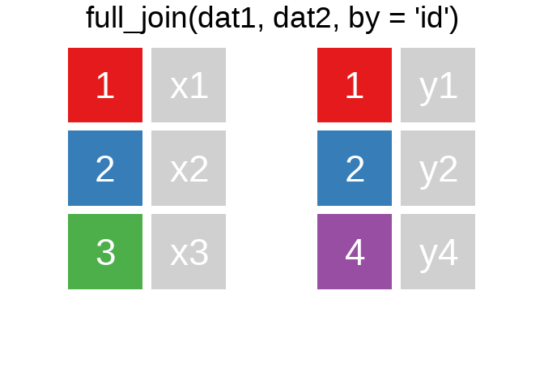

11 Data Wrangling III
11.1 Datensätze verbinden
A mutating join allows you to combine variables from two tables. It first matches observations by their keys, then copies across variables from one table to the other.
R for Data Science: Mutating joins
Ein Überblick zu den wichtigsten Befehlen:1



Es gibt natürlich auch right_join() oder anti_join(). Für eine tiefergehende Einführung lohnt sich das Kapitel Relational Data aus R for Data Science.
Eine sehr hilfreiche Option in den ..._join() ist die Verbindung unterschiedlicher Variablen. Bspw. haben wir hier einige Fälle aus der ETB18 und
Code
etb18_int_bl <- haven::read_dta("./data/BIBBBAuA_2018_suf1.0.dta",
col_select = c("intnr","Bula") # mit col_select() können Variablen ausgewählt werden
)
etb_ids <- etb18_int_bl %>% slice(c(1,125,1230,21010,8722) )
set.seed(90459)
alo_bula <- data.frame(bundesland = seq(1:8),
Werte = sample(letters,size = 8) # mit sample() kann eine zufällige Auswahl getroffen werden
)etb_ids#> # A tibble: 4 × 2
#> intnr Bula
#> <dbl> <dbl+lbl>
#> 1 260 11 [Berlin]
#> 2 30699 5 [Nordrhein-Westfalen]
#> 3 209604 6 [Hessen]
#> 4 1540064 8 [Baden-Württemberg]alo_bula#> bundesland Werte
#> 1 1 g
#> 2 2 m
#> 3 3 n
#> 4 4 z
#> 5 5 w
#> 6 6 r
#> 7 7 t
#> 8 8 hetb_ids %>% left_join(alo_bula,by = c("Bula"="bundesland"))#> # A tibble: 4 × 3
#> intnr Bula Werte
#> <dbl> <dbl+lbl> <chr>
#> 1 260 11 [Berlin] <NA>
#> 2 30699 5 [Nordrhein-Westfalen] w
#> 3 209604 6 [Hessen] r
#> 4 1540064 8 [Baden-Württemberg] hEin sehr hilfreiche Checkmöglichkeit, die ich häufig verwende: Für alle Bula in etb_ids findet sich eine Entsprechung in alo$bundesland:
table(etb_ids$Bula %in% alo_bula$bundesland)#>
#> FALSE TRUE
#> 1 311.1.1 Übung
11.2 Reshape: pivot_longer() & pivot_wider()
bsp_df <-
data.frame(
bula = c("NRW","NDS"),
alo2018 = c(2,2),
alo2017 = c(1,1)
)
bsp_df#> bula alo2018 alo2017
#> 1 NRW 2 1
#> 2 NDS 2 1Mit pivot_longer() können wir aus einem wide shape data.frame einen long shape machen:
bsp_df %>% pivot_longer(cols = c("alo2018","alo2017"),names_to = "year",values_to = "alo")#> # A tibble: 4 × 3
#> bula year alo
#> <chr> <chr> <dbl>
#> 1 NRW alo2018 2
#> 2 NRW alo2017 1
#> 3 NDS alo2018 2
#> 4 NDS alo2017 1Mit names_prefix = "alo" können wir das alo direkt löschen lassen:
bsp_df %>% pivot_longer(cols = c("alo2018","alo2017"),names_to = "year",values_to = "alo",names_prefix = "alo")#> # A tibble: 4 × 3
#> bula year alo
#> <chr> <chr> <dbl>
#> 1 NRW 2018 2
#> 2 NRW 2017 1
#> 3 NDS 2018 2
#> 4 NDS 2017 1Mit pivot_wider() können wir den umgekehrten Weg gehen:
bsp_df2 <-
data.frame(land = c("NRW","NDS","NRW","NDS"),
alo = c(2.1,1.8,2.4,2.2),
alter = c("age_1825","age_1825","age_2630","age_2630"))
bsp_df2#> land alo alter
#> 1 NRW 2.1 age_1825
#> 2 NDS 1.8 age_1825
#> 3 NRW 2.4 age_2630
#> 4 NDS 2.2 age_2630bsp_df2 %>% pivot_wider(names_from = alter,values_from = alo)#> # A tibble: 2 × 3
#> land age_1825 age_2630
#> <chr> <dbl> <dbl>
#> 1 NRW 2.1 2.4
#> 2 NDS 1.8 2.211.3 Übungen
11.3.1 Übung 1
Verknüpfen Sie die ausgewählten Beobachtungen der ETB 2018 mit Arbeitsmarktstatistiken von Destatis. Lesen die ETB mit folgendem Befehl ein:
etb_ue11 <- haven::read_dta("./data/BIBBBAuA_2018_suf1.0.dta",
col_select = c("intnr","int_jahr","Bula")) %>%
slice(34:35,68:69,62,687,625,684,599:600)
etb_ue11#> # A tibble: 10 × 3
#> intnr int_jahr Bula
#> <dbl> <dbl> <dbl+lbl>
#> 1 7045 2017 3 [Niedersachsen]
#> 2 7119 2017 3 [Niedersachsen]
#> 3 15443 2017 5 [Nordrhein-Westfalen]
#> 4 15527 2017 5 [Nordrhein-Westfalen]
#> 5 13619 2018 3 [Niedersachsen]
#> 6 104699 2018 3 [Niedersachsen]
#> 7 94148 2018 5 [Nordrhein-Westfalen]
#> 8 103957 2018 5 [Nordrhein-Westfalen]
#> 9 87426 2017 1 [Schleswig-Holstein]
#> 10 87648 2017 6 [Hessen]So können Sie die aufbereiteten Arbeitslosendaten einlesen (die Zahlencodes in beiden Datensätzen stimmen überein):
alo <- readRDS(file = "./data/alo_bula1.Rdata")
alo#> # A tibble: 2 × 3
#> ags name aloquote
#> <dbl> <chr> <chr>
#> 1 3 Niedersachsen 5.8
#> 2 5 Nordrhein-Westfalen 7.4Wie müssten Sie vorgehen, wenn Sie nun jahresgenaue Angaben haben und dementsprechend zusätzlich auch nach dem Jahr mergen möchten?
alo_j <- readRDS(file = "./data/alo_bula1_jahr.Rdata")
alo_j#> # A tibble: 4 × 4
#> ags name aloquote jahr
#> <dbl> <chr> <chr> <dbl>
#> 1 3 Niedersachsen 5.8 2017
#> 2 5 Nordrhein-Westfalen 7.4 2017
#> 3 3 Niedersachsen 5.3 2018
#> 4 5 Nordrhein-Westfalen 6.8 201811.3.2 Übung 2
alo_wide <- readRDS(file = "./data/alo_bula2.Rdata")
alo_wide#> # A tibble: 2 × 4
#> ags name alo_2017 alo_2018
#> <chr> <chr> <chr> <chr>
#> 1 03 Niedersachsen 5.8 5.3
#> 2 05 Nordrhein-Westfalen 7.4 6.8Bringen Sie alo_wide in das long shape:
#> # A tibble: 4 × 4
#> ags name jahr alo_quote
#> <chr> <chr> <chr> <chr>
#> 1 03 Niedersachsen 2017 5.8
#> 2 03 Niedersachsen 2018 5.3
#> 3 05 Nordrhein-Westfalen 2017 7.4
#> 4 05 Nordrhein-Westfalen 2018 6.8Illustrationen mit tidyexplain↩︎